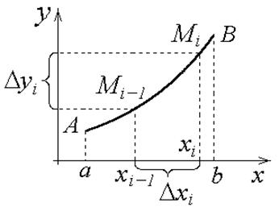

24.2.1. Вычисление длины плоской кривой в прямоугольных координатах

. Разобьем  на части
на части  .
.
на части .На кривой обозначим точки .
Соединим их хордами. Получим ломаную, состоящую из  хорд.
хорд.
хорд. – длина  - хорды,
- хорды,
- хорды, – длина ломаной.
По теореме Лагранжа имеем:
,  ,
.
,
.
,
.Пусть  ,
Длина плоской
кривой в прямоугольных координатах
, следовательно, .
,
Длина плоской
кривой в прямоугольных координатах
, следовательно, .
,
Длина плоской
кривой в прямоугольных координатах
, следовательно, .